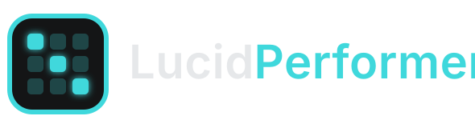
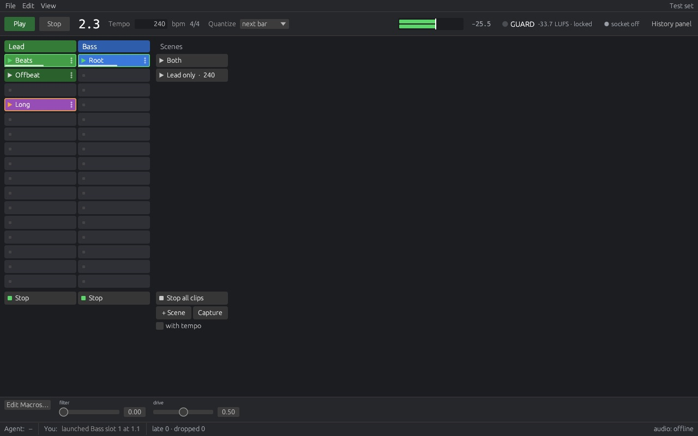
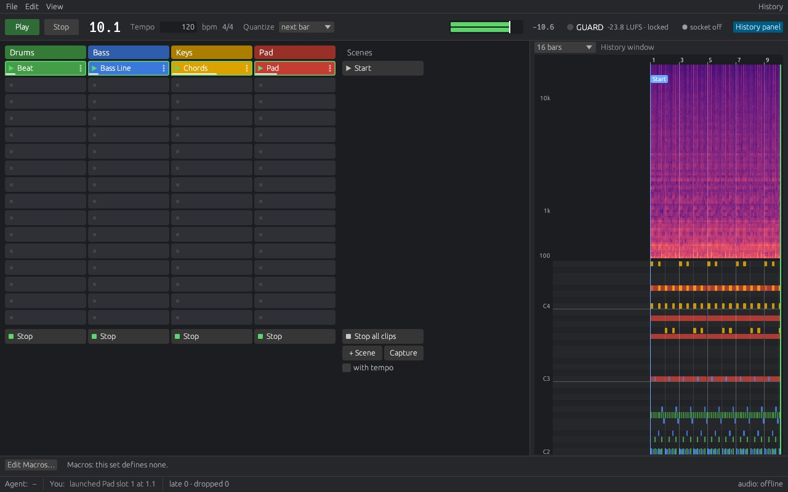
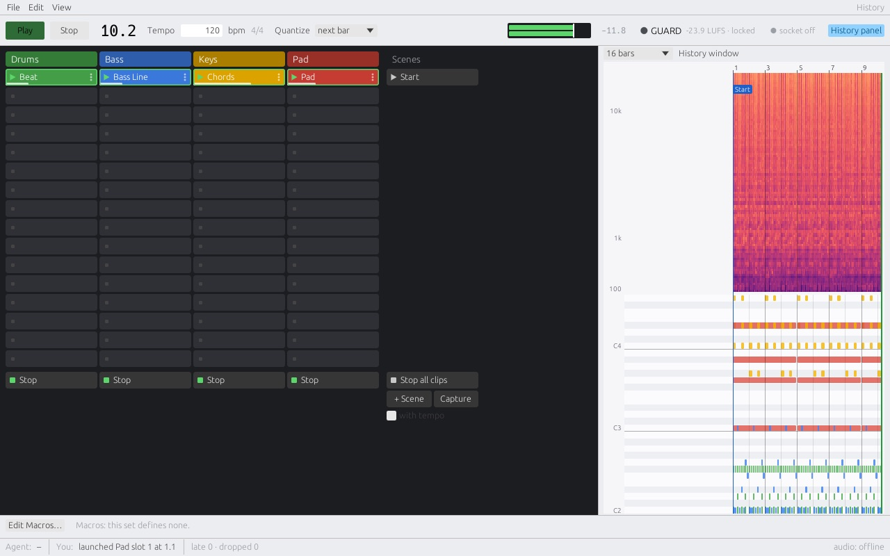
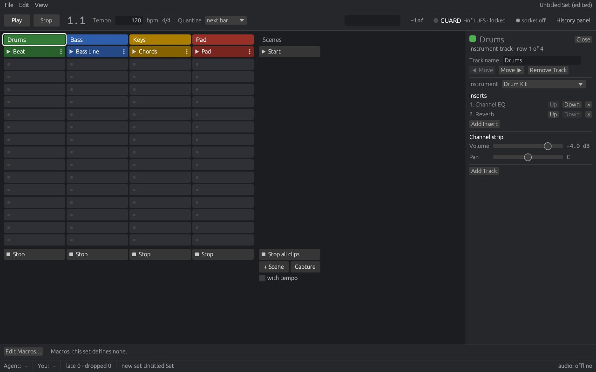
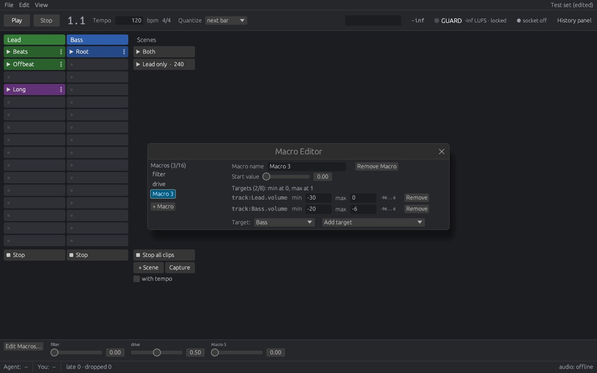
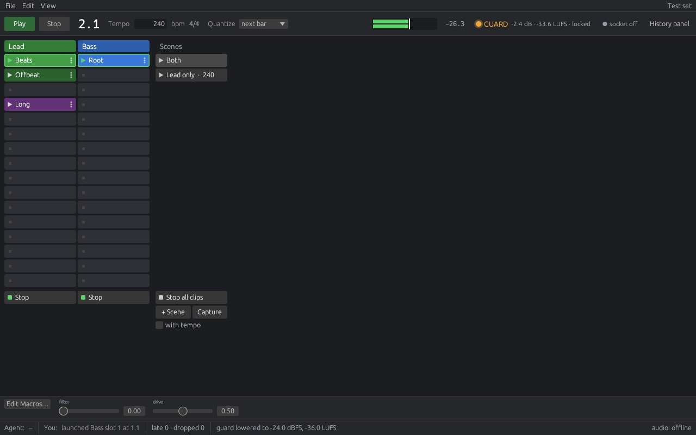

A live performance instrument written from scratch in Rust: a grid of clips, scenes and macros running on one beat clock. You play it in its window while an AI agent plays the same set over a local socket, and every move lands on the beat.

An AI agent such as Claude can join a performance as a second player. It does not edit a timeline: it sends performance ops with a musical time, so a slow answer still lands on the beat.
at:
next_bar, next_bars:4 for the phrase grid, or
+2 bars for a lead. The host queues it and plays it on that sample.perf.history gives an agent the same
record as data..lucidproj: clip plays turn into regions, parameter moves into
automation and tempo moves into tempo changes.# a starter set: Drums, Bass, Keys, Pad and a scene "Start" $ lucidperformer-cli new live.lucidset $ lucidperformer-cli serve --set live.lucidset & # the agent plays along, always on the beat $ lucidperformer-cli scene Start $ lucidperformer-cli pattern Bass 2 \ --file examples/patterns/alternating_bass.rhai $ lucidperformer-cli launch Bass 2 --at next_bars:4 $ lucidperformer-cli wait next_bars:4 # take the performance home as a LucidProducer project $ lucidperformer-cli stop $ lucidperformer-cli export --out take.lucidproj # or hand the whole thing to Claude Code $ claude mcp add lucidperformer -- lucidperformer-mcp
A dark window with a clip grid, a scene column, macro sliders and a top bar with transport, tempo, quantize and the Loudness Guard. The set is built and edited in the same window, and the engine is the real-time safe one LucidProducer plays with.
A rack of tracks, each with a column of clip slots. Click a clip to launch it on the set's quantize, or give it a launch quantize and a follow action of its own.
A scene launches, keeps or stops each track's slot on the same sample and can change the tempo. Capture turns what plays now into a new scene.
A macro is one 0 to 1 slider mapped onto up to eight targets, each with its own range. Any parameter or macro can ramp to a value over beats or bars.
Next to notes clips there are step-pattern clips for drums and script clips: Rhai code that writes the notes of each pass, swapped in while the set plays.
Every output ends in a true-peak ceiling of -1 dBFS and a short-term limit of -10 LUFS. Agents can read it but not change it; it can only be lowered, when the host starts or in the app's Output Safety settings.
A mel spectrogram over an aggregated piano roll, with bars, scene and tempo markers, over 16, 32 or 64 bars, 1, 5 or 10 minutes, or the whole performance.
lucidperformer-cli and lucidperformer-mcp talk to the
running app or a headless host: state, ops, set edits, events and an offline
rehearsal of a cue list.
A performance or the scenes become a LucidProducer project, with track moves and the master volume as automation lanes, ready to mix and render.
From the app's own snapshot tests. Click an image to enlarge it.





Playing live with an agent needs two things a studio does not: a hard limit on what can reach the speakers, and a way to see what just happened.
A runaway synth, a feedback loop or an agent's mistake never reaches your ears at full level. The guard sits at the end of every output, live and in offline rehearsals, and the top bar shows when it reduces the level. An agent reads the guard's state but has no way to turn it up.
The History panel (View > History, Shift+Cmd+H) draws the output as a mel spectrogram above a piano roll of the notes every track played, in the track colours, on one time axis with bar lines, scene and tempo markers. Hover it to read the time, the bar, the frequency and level, or the note and its velocity.
LucidPerformer is in pre-release testing on macOS (Apple Silicon), next to its sibling LucidProducer, the agentic DAW. Public builds will follow. It is a clean-room project and shares no code with any other music software.